Джеймс Тиссо: «Жизнь Христа»
Он воображал себе Святую Землю такой, как будто она ничуть не изменилась со времен рождения Христа. Хотя при этом у него не было иллюзий о том, что она могла осталться неизменной.
Джеймс Тиссо: «Жизнь Христа»
К выставке Бруклинского музея искусств (Бруклин, Нью-Йорк) 2010г.
НАЧАЛО ПУБЛИКАЦИЙ О ДЖЕЙМСЕ ТИССО СМ.ЗДЕСЬ
Даже для самых восторженных и смелых ревизионистов, религиозное искусство девятнадцатого века уже давно перестало быть последним рубежом. В значительной степени это было связано с его (религ.иск-ва) упорными попытками выживания, часто в деградировавшей форме. Это выражалось в характерных для того времени формах религиозной визуальной культуры, таких, как массовое искусство, молитвенные карточки, иллюстрации к катехизисам, религиозные календари, вышивки и т.п. Это в свою очередь привело к тому, что большинство искусствоведов даже в разгаре исторического ревизионизма истории искусств в 1970-х и 1980-х годов стали отвергать религиозное искусство девятнадцатого века или игнорировали его совершенно.
картинки кликабельны
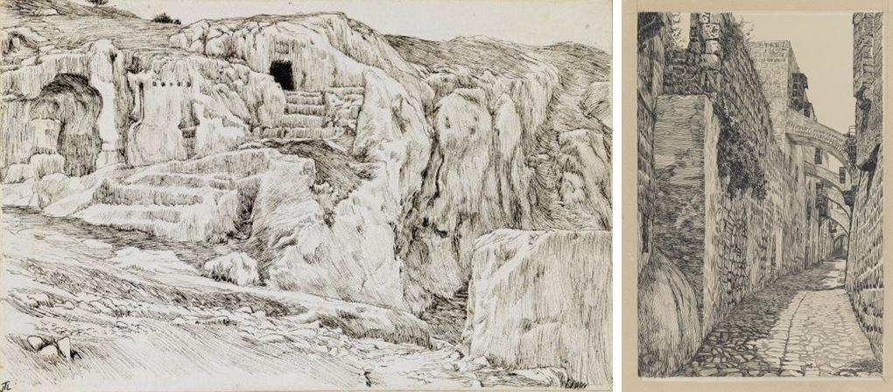
С конца 1980-х годов тенденция изучать искусство не изолированно, а в более широком контексте визуальной культуры, помогла вновь обратить внимание на ранее забытые направления искусства. Одним из них является религиозное искусство девятнадцатого века. По иронии судьбы, популярное религиозное изобразительное искусство и его история стали предметом исследования искусствоведов. Возродился также интерес к религиозному искусству девятнадцатого века. Искусствоведы пришли к выводу о бессмысленности бесконечных перепевов итальянского ренессанса и таких тем в стиле барокко как Сикстинская Мадонна Рафаэля или Голова Христа, увенчанная терновым венком Гвидо Рени. Религиозное искусство девятнадцатого века является частью широкой и разнообразной составляющей визуальной культуры, которая не только включает в себя богослужебные образы, нои также иллюстрированные Библии, гравюры и фотографии в путеводителях о Святой Земле, и иллюстрации в книгах и статьях по библейской археологии. Кроме того, религиозное искусство того времени не может быть отделено от наиболее важных богословских поисков девятнадцатого века и критического исследования жизни Иисуса.
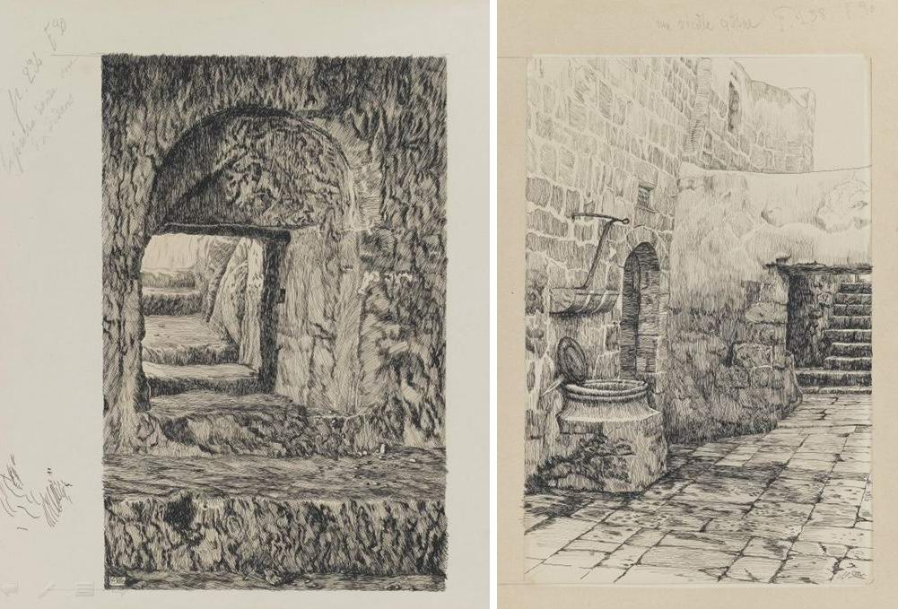
Недавнюю выставку 124 из 350 акварелей Джеймса Тиссо, о жизни Христа, состоявшуюся в 2010г. в Бруклинском музее, следует рассматривать как часть такого переосмысления религиозного искусства девятнадцатого века, новый взгляд через широкую призму визуальной культуры в целом. Это была также возможность показать целый пласт работ, ошеломляющий визуально и, как стало понятно после просмотра этой выставки, которые невозможно адекватно репродуцировать. Действительно, даже самые лучшие современные репродукции не могут передать завораживающего мастерства этих миниатюрных картин, наибольший размер которых редко превышает 25 см.
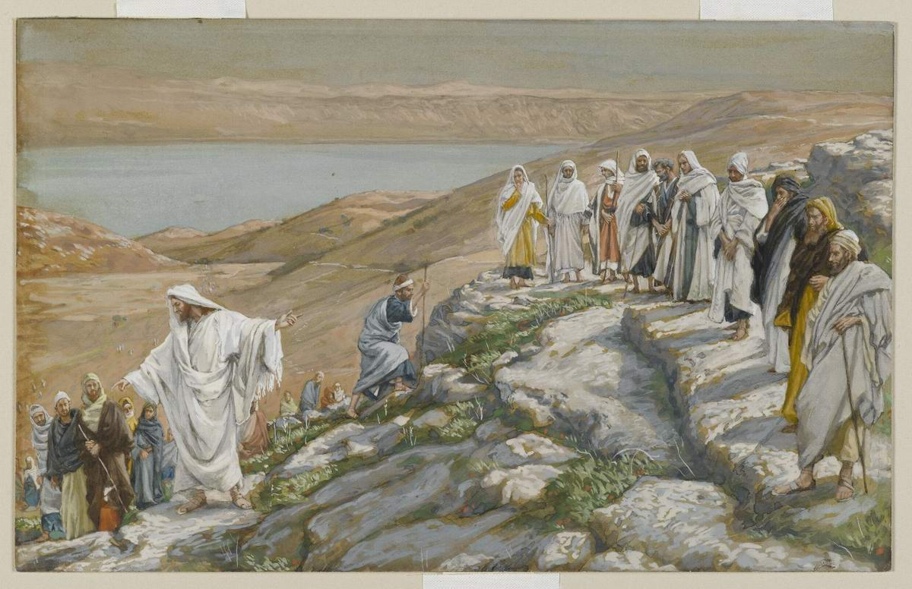
Акварели Тиссо давно считались странной аномалией в творчестве художника, известного своими ослепительными виньетками модной парижской и лондонской жизни. Ученые, изучавшие этого художника, по большому счету, не обращали на них особого внимания. И Бруклинский Музей не выставлял их с 1980 года, несмотря на то, что не проходит и недели, чтобы об акварелях не задавали бы вопросов в основном посетители, которые знают его иллюстрации по репродукциям в учебниках воскресных в школ и катехизисах.
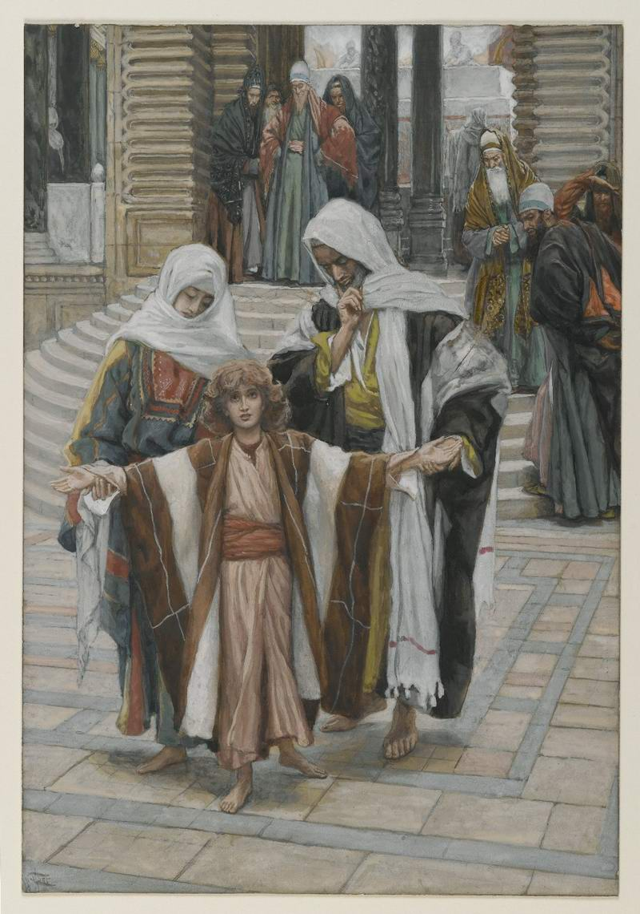
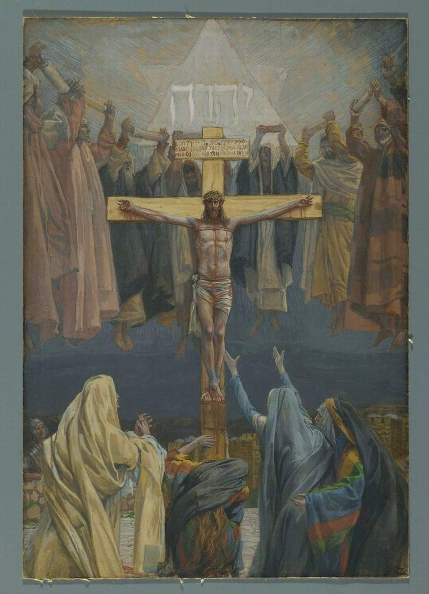
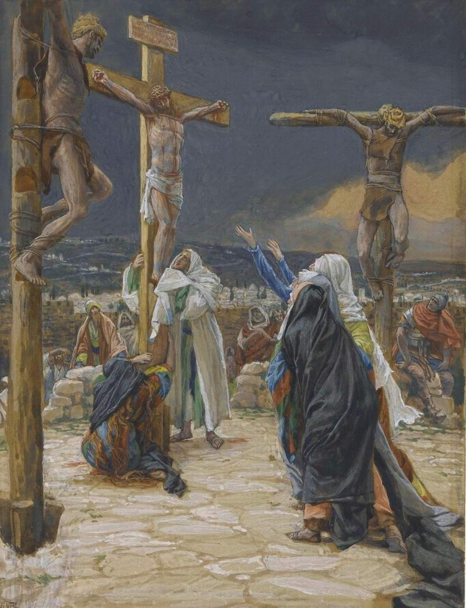
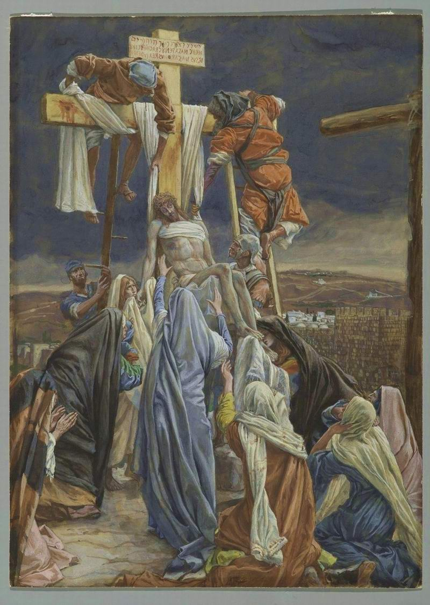
Замечательная серия акварелей Тиссо стала следствием пережитого художником религиозного опыта в парижской церкви Сен-Сюльпис в 1885, который заставил Тиссо отказаться от его мирской жизни, закончить карьеру успешного живописателя британского и французского общества, чтобы поехать в Египет, Сирию и Палестину в 1886-1887, а затем в 1889 году. Он посетил те места, где Христос ходил в детстве, проповедовал, будучи молодым человеком, был распят и воскрес из мертвых. Конечная цель этих поездок состояла в том, чтобы создать серию акварелей для иллюстрированной биографии Иисуса, которая состояла бы из живописных работ, сопровождаемых библейскими текстами из четырех Евангелий, а также описаний сцен, которые Тиссо наблюдал во время своих путешествий.
Хотя возвращение художника к вере стало важным стимулом для его проекта, на Тиссо, по всей вероятности, произвел впечатление и огромный успех подобных проектов, в первую очередь известного французского иллюстратора Библии Гюстава Доре (1865-1866). Его иллюстрированная Библия была издана в томах различных форматов на многих языках. Кроме того, иллюстрации без текста, были опубликованы в так называемом издании "Галерея Доре", которая была чрезвычайно популярна.
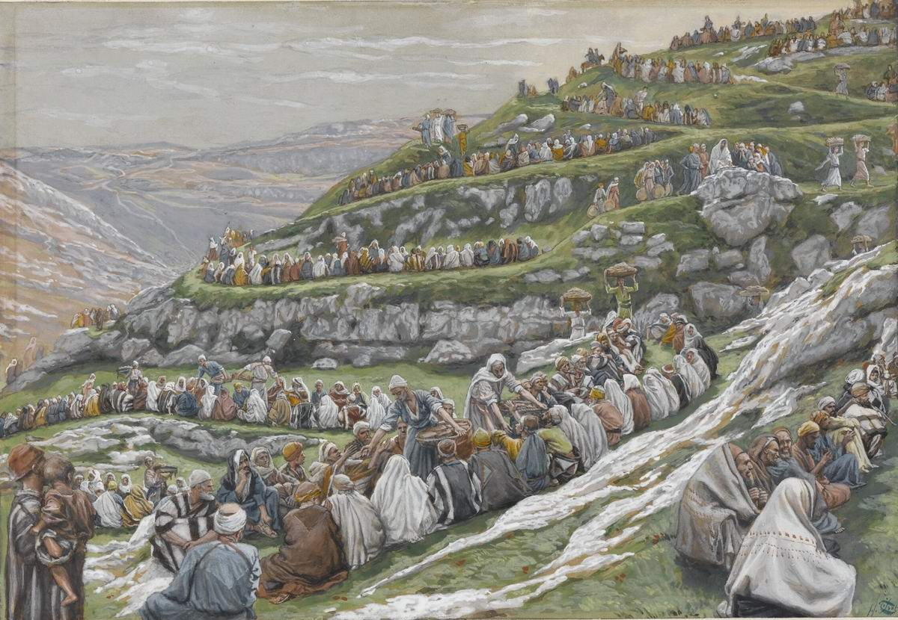
Проект Тиссо ставил своей целью создать нечто отличное от иллюстраций Доре. Он не только целенаправленно сосредоточился на жизни Мессии (впрочем, позже он приступил также и к иллюстрированию В.Завета), но также противопоставил романтическим фантазиям в иллюстрациях Доре новый веризм. На основе своих поездок в Святую Землю, он сделал бесчисленные предварительные зарисовки и фотографии (ни одна его фотография до нас не дошла). В большинстве своем ландшафтные и городские сюжеты из жизни Христа основаны на сценах, наблюдаемых Тиссо в Палестине. То же самое верно для многих персонажей, которые созданы на основе изучения различных "типажей", увиденных во время его поездок.
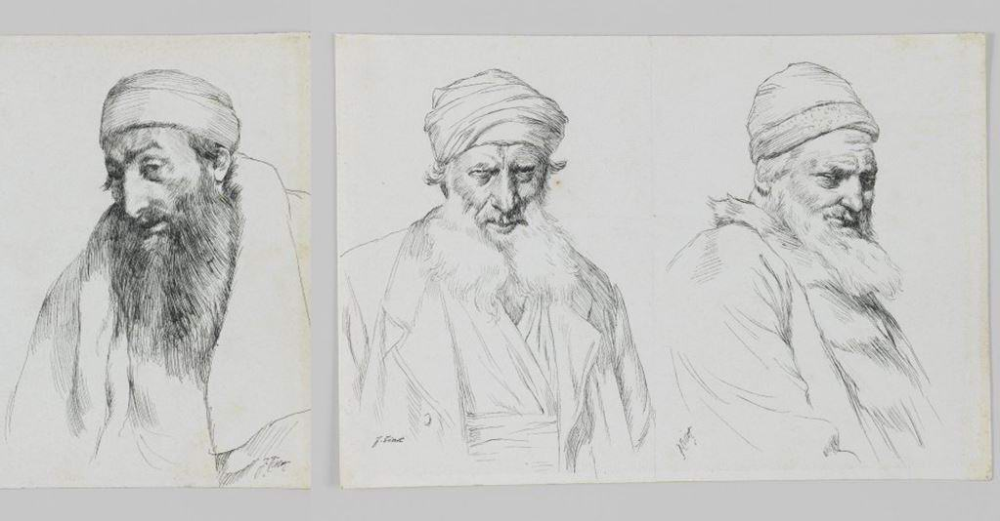
Он воображал себе Святуя Землю такой, как будто она ничуть не изменилась со времен рождения Христа. Хотя при этом у него не было иллюзий о том, что она могла остаться неизменной.
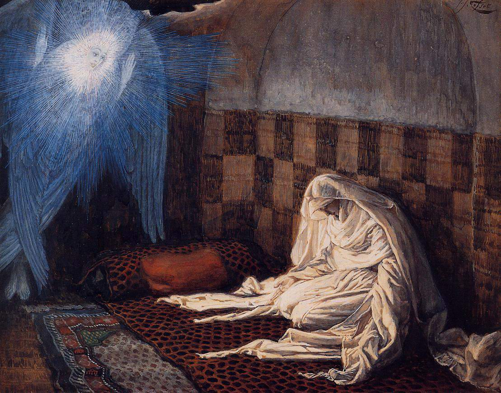
- Annunciation Illustration for the Life of Christ
Успех акварелей Тиссо, как представляется, связан с тем, что он тщательно согласовал между собой несколько противоречащих друг другу посылов. К ним относятся веризм, т.е. правдивое представление Палестины и ее народа; попытка по-новому представить евангельские сцены, особенно те, что связаны с чудесами; и уважение к традиции, идущее из осознания того, что образы должны были быть узнаваемы, если вы желаете, чтобы ваш проект был успешным. Иными словами – предложить некую связь с уже известными изображениями и представлениями о жизни Мессии. Результатом всего этого стала серия акварелей, которые в высшей степени оригинальны по своему замыслу, но приэтом не настолько отличаются от всего остального, чтобы перестать быть узнаваемыми в качестве библейских сцен. Вот только один пример: "Что видел Господь с креста?" Эта работа показывает уникальный вид Голгофы, как ее видел с креста Спаситель (см. ниже). Но при том, что точка зрения уникальна, в работе присутствуют традиционные составляющие иконографии – Дева в обморочном состоянии, апостолы и центурионы, - все они здесь.
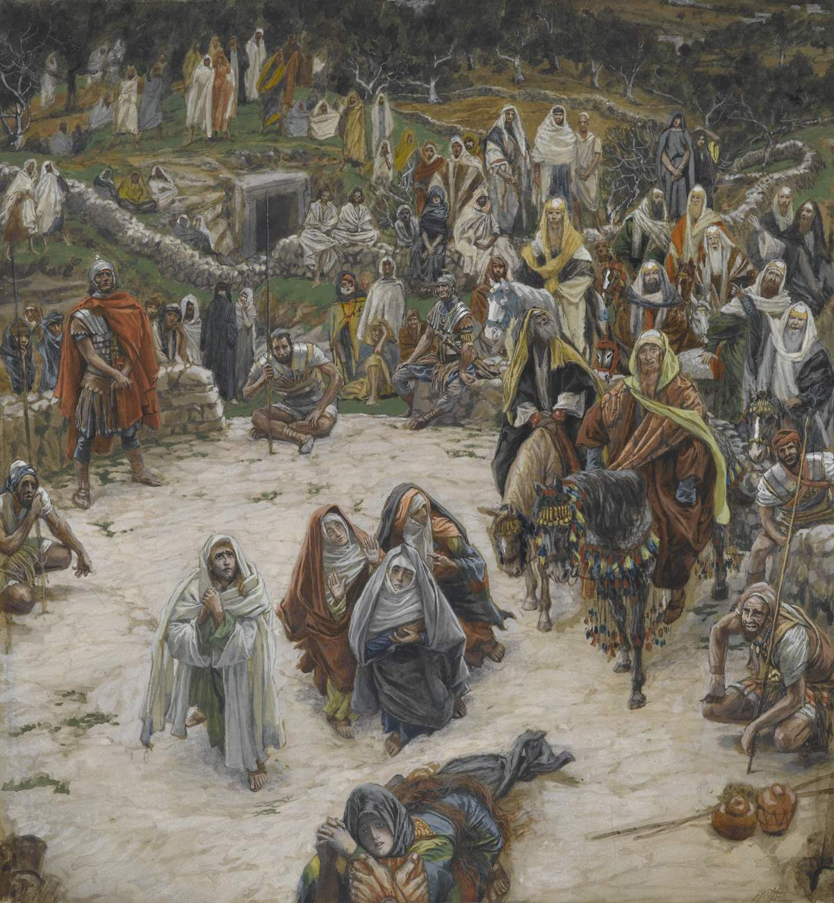
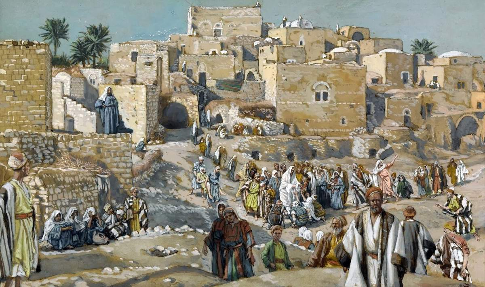
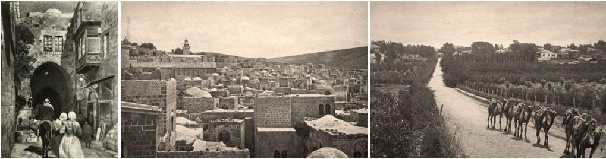
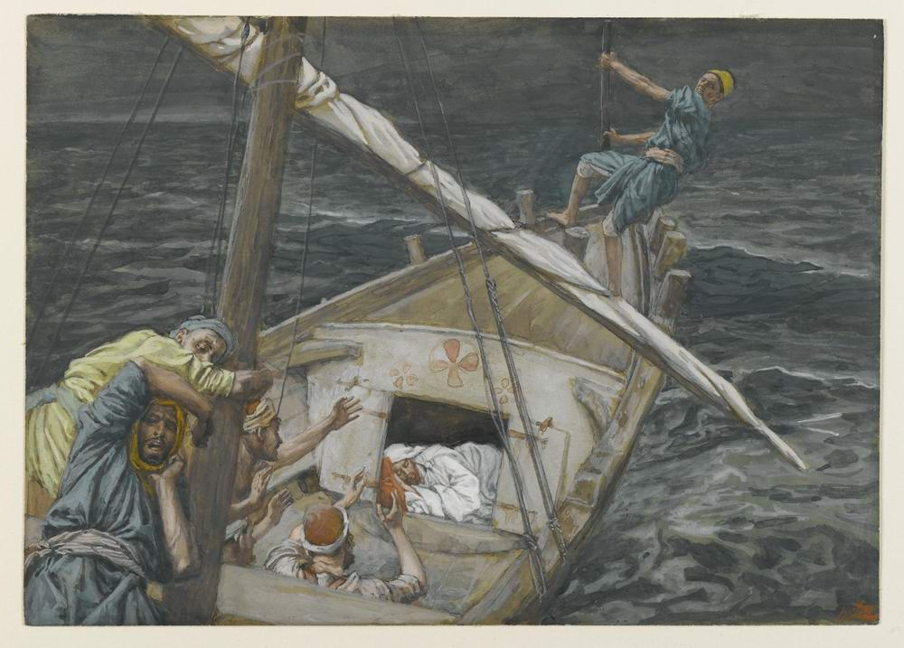
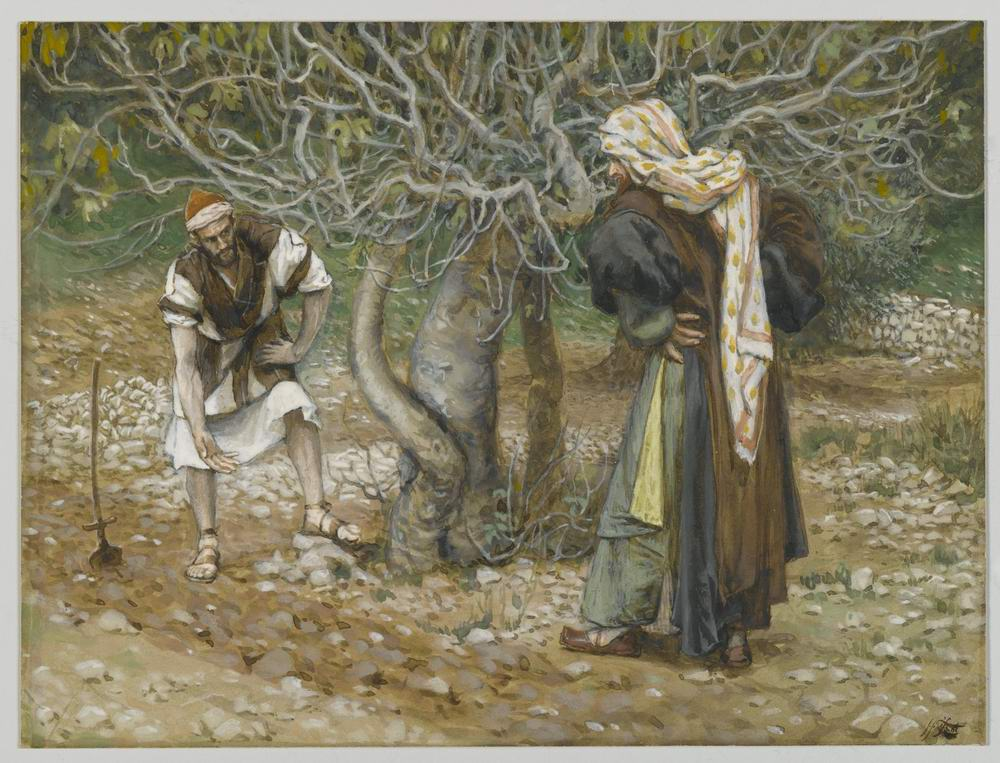
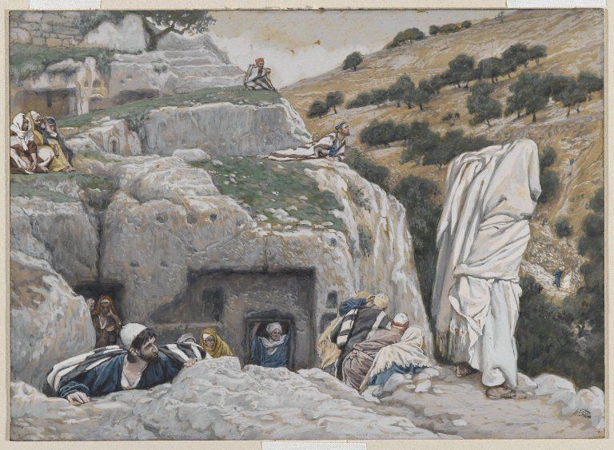
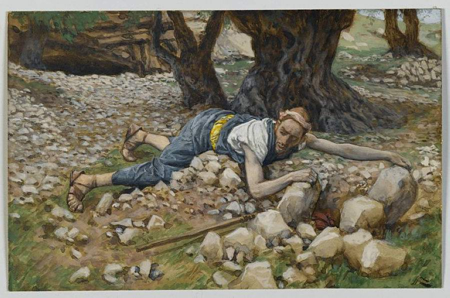
В дополнение к оригинальности своей концепции, техническое мастерство Тиссо позволило ему создать потрясающие акварели размером в большинстве своем примерно 20 х 25 см (рис. 5). Кроме того, его использование цвета примечательно не только в акварелях с тщательно проработанными одеяниями людей, но и мистическими сценами, такими как «Благовещенье». Все это в сочетании с его невероятным вниманием к деталям привело к замечательному результату.
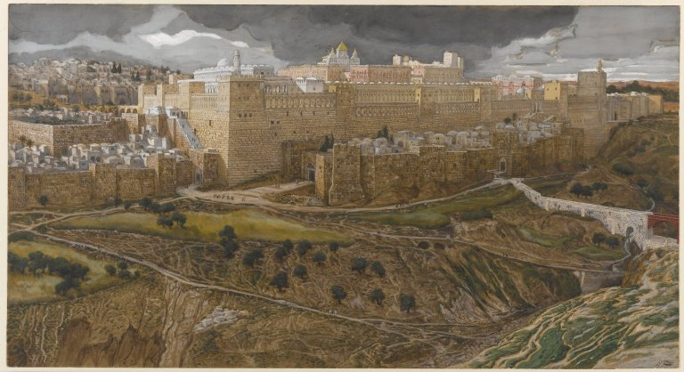
Автор: Petra Chu. Перевод: Вета Калиш
19thc-artworldwide.org
НАЧАЛО ПУБЛИКАЦИЙ О ДЖЕЙМСЕ ТИССО СМ.ЗДЕСЬ